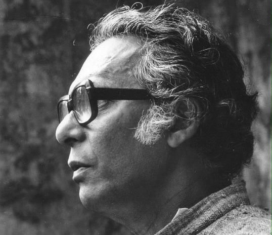

Our History

On the suggestion of renowned film director and socialist "Sri Mrinal Sen." Prithibeer Nakshatra started its journey back in the year 2011, main agenda being education and social upliftment of the underprivileged children through informal and practical education i.e. elementary education along with various co-curricular activities such as sports, drama, music, paintings etc. biased on the child's interest. We also thrive to provide them with health-care, food and clothes since then.
Vision And Mission

Prithibeer Nakshatrabelieves that informal education is the key to formal education. We are-trying to promote education through informal means and health awareness among backward class children , better to say we are putting in our best efforts to uplift the underprivileged & unprivileged children of our society to create a better tomorrow for them as well as us.
Our Team

Prithibeer Nakshatra started its work with a team of 9 volunteer at a tribal village in Durgapur named "MOCHANRAKONDA" . Ever since then we are trying to create an impact on the lives of hundreds of children in order to gift them a better future.With the scope of expansion of our work to Kolkata we are proud to have more than 70 members arepresently working with us.